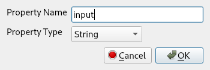
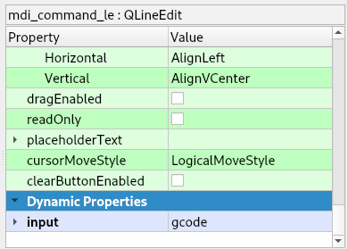
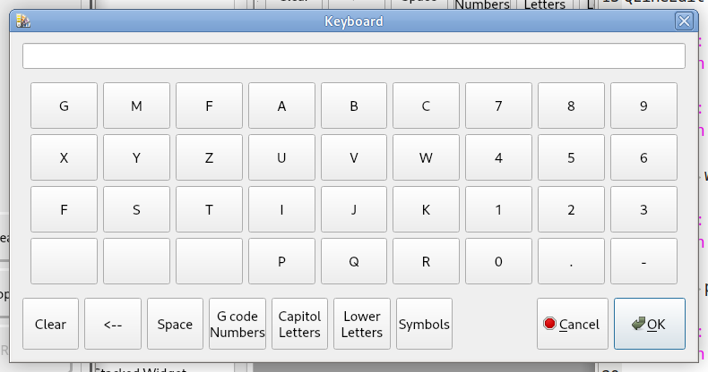
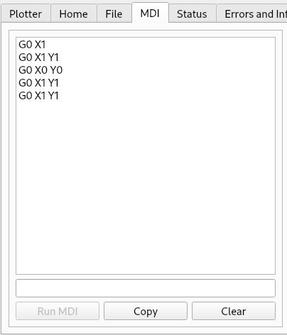

Manual Data Input (MDI)¶
MDI Interface¶
The MDI Interface uses a QLineEdit named mdi_command_le to enter commands.
For touch screens there are two options a NC Popup is a touch screen that has G and M words and a number keypad or a Keyboard Popup has a full keyboard.
To enable a popup add a Dynamic string type Property to the mdi_command_le QLineEdit and name it input and set the value to either nccode or keyboard.
Dynamic Property
Setting the value
NC code popup window

Keyboard popup window
MDI History¶
MDI history uses a QListWidget named mdi_history_lw to display the MDI history. You can click on a line in the history display to copy the command to the MDI Interface, ready for running.
The MDI history is kept in a file named mdi_history.txt in the configuration directory.
MDI Controls¶
The following QPushButtons can be used to execute, copy, and clear MDI command history
Function |
Widget |
Object Name |
Run MDI Command |
QPushButton |
run_mdi_pb |
Copy the MDI History to the Clipboard |
QPushButton |
copy_mdi_history_pb |
Save the MDI History to a file |
QPushButton |
save_mdi_history_pb |
Clear the MDI History |
QPushButton |
clear_mdi_history_pb |